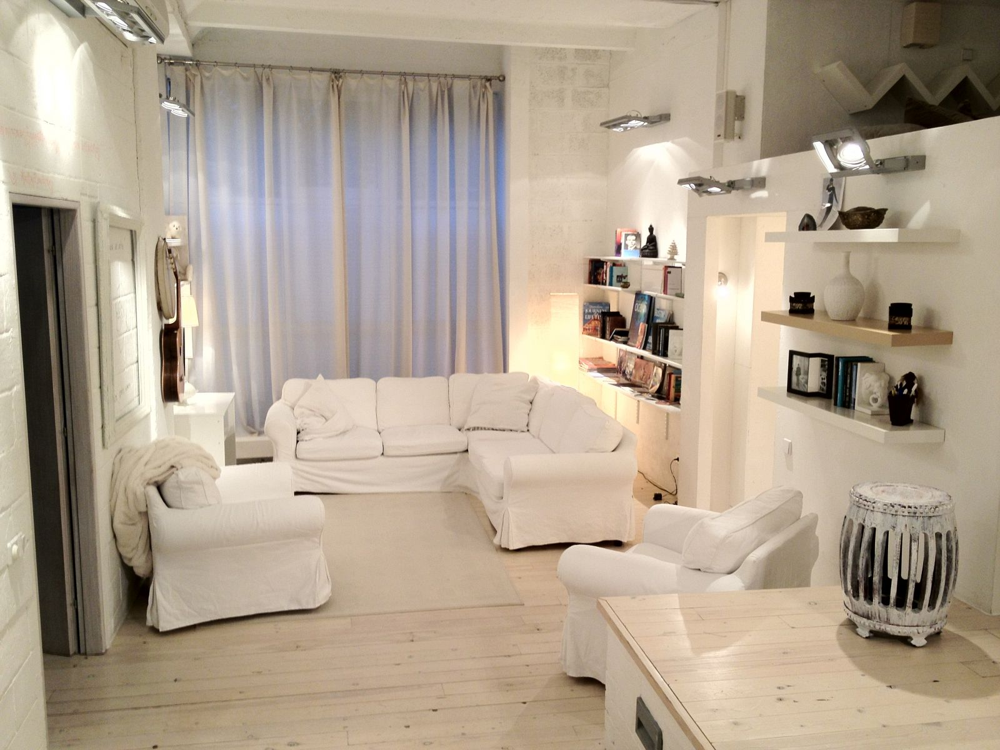

Управление отношениями
Видеозапись тренинга
Подробно о тренинге | Константин Пухов на REN-TV
В каких случаях для решения проблем в отношениях подходит этот тренинг?
Независимо от того, являются ли эти отношения личными или профессиональными - если причина проблемы Вам не известна или носит иррациональный характер, то скорее всего она находится на бессознательном уровне. И в этом случае лучше всего работать так же, с бессознательным уровнем, используя ресурсы нашего подсознания.
Можно, конечно, прибегнуть и к помощи классических подходов, которые стараются "предположить" или "выявить" сначала причину. Но в этом случае нужно быть готовым к:
а) длительной работе методом перебора всех возможных проблем.
б) Принятию тех вещей (в себе и других людях), которые принять очень сложно или болезнено.
Преимущество сознательного подхода - Вы будете знать в чем была истинная причина.
Но если Ваша задача - решить проблему как можно скорее и не ковыряясь в неприятном опыте прошлого (который может всплыть), то бессознательный подход будет лучшим вариантом.
Из технологий, работающих на бессознательном уровне самой известной и результативной является (а так же, наиболее признаваемой в терапевтическом сообществе) "Социальная панорама" Лукаса Деркса, на которой и основат этот тренинг.
Для использования этой технологии специальных знаний и подготовки не требуется. Хотя специалистам и профессиональным терапевтам она также будет очень интересна.
Как это работает?
Попробуйте как это работает прямо сейчас:
1) Вспомните какого-либо человека, с которым у Вас отличные отношения. Как Вы его представляете себе во внутреннем пространстве где он находится:
- на каком расстоянии от вас?
- на какой высоте его глаза?
- куда он смотрит? и т.д...
Лучше делать с закрытыми глазами.
2) А теперь вспомните какого-либо человека, с которым у Вас не очень удачные отношения. Как Вы предсталяете себе его фигуру во внутреннем пространстве?
Видите разницу? Так кодируется наше восприятие людей в подсознании.
Интерпретация проблемных позиций:
- Если взгляд человека находится выше уровня Ваших глаз или его фигура больше вас (давление авторитета или мнения человека)
- Если фигура близкого человека находится слишком далеко от вас (чрезмерня дистанция, отсутствие душевной близости)
- Если фигура человека или внутри вас / вы внутри нее (идентификации с человеком)
- Если фигура человека находится к вам спиной, находится за вашей спиной (сложности во взаимопонимании)
- Если фигура человека смотрит прямо на вас (в данный момент вопрос ваших взаимотношений крайне актуален)
Нормальные, здоровые отношения:
Когда человек стоит к Вам плечок к плечу (слева или справа, в зависимости от типа отношений и уровня близости).
Простое приведение внутренней фигуры в это положение может дать ощущение улучшения, однако для реального решения проблемы нужно совершить внутреннюю трансформацию с помощью соответствующих техник:
"Перенос модели успешных отношений" (референтный пример)
"Снижение давления авторитета"
"Увеличение личной силы"
"Де-конфликтизация"
"Создание ресурса команды"
Какие результаты Вы получите
1) В ходе самого тренинга Вы сможете трансформировать отношения которые Вас не устраивают (личные, профессиональные, детско-родительские или отсутствующие ) в те, которые Вы хотите иметь. Понятно, что это не произойдет мгновенно. Но на тренинге Вы выполните "бессознательную настройку", которая изменит Ваше поведение (создающее ту ситуацию, которую Вы сейчас имеете) на конструктивное и создающее ту ситуацию, которую Вы хотите иметь в этих отношениях. И при контакте с этим человеком или возникновении подобной ситуации в следующий раз события начнут разворачиваться уже совершенно иным образом. Причем, Вам не нужно будет даже помнить об этом - нужное поведение будет транслироваться Вами бессознательно.
2) Вы освоите все техники, позволяющие выполнять "бессознательные настройки" налету, за несколько минут (а с опытом - секунд) и решать проблемы в отношениях сразу, как они возникают.
3) Вы глубоко проработаете образ себя, усилить свою позицию, укрепить свои границы, стать более уверенным и смелым человеком, способным принимать решения, основанные на собственном мнении и отстаивать свои интересы.
4) На мастер-блоке Вы сможете трансформировать самую глубокую причину, определяющую то, как складывается Ваша судьба в отношениях с людьми на данный момент и освободитья от наследия прошлого, став свободным человеком, которому открыты все возможности.
5) А также Вы сможете трасформировать аналогичным образом Ваши отношения не только с людьми, но и с деньгами, здоровьем, самим собой и событиями, которые Вы бессознательно притягиеваете в свою жизнь, чтобы получить то, что Вы хотите.
Программа тренинга
В основе тренинга лежит технология Лукаса Деркса "Социальная панорама". Вы можете найти много отзывов о ней в интернете, как об одной из самых прогрессивных техник НЛП. Кроме того, эта технология дополнена техниками из Эриксоновского гипноза, которые активизируют также глубинные бессознательные процессы, делают процесс изменений мягким и экологичным, а всю систему - на порядок эффективнее.
Для использования этой технологии специальных знаний и подготовки не требуется. Хотя специалистам и профессиональным терапевтам она также будет очень интересна.
Основная программа тренинга (29-30 сентября)
Начальный уровень
- Как наладить личную жизнь. Настройка отношений c противоположным полом.
- Карьерный рост. Настройка деловых отношений с начальством, подчиненными и коллегами.
- Успех в бизнесе и эффективные переговоры. Настройка деловых отношений с партнерами и клиентами.
- Ваш статус и Авторитеты. Настройка межстатусных отношений.
- Конфликты. Настройка отношений, позволяющих управлять конфликтами и выходить из конфликтов.
- Гармония в семье. Настройка отношений с детьми и родителями.
- Гармония с собой. Настройка образа себя и отношений с самим собой, своими внутренними желаниями, принципами и приоритетами.
- Гармония с миром. Настройка отношений с социумом в целом.
Продвинутый уровень
- Настройка отношений со здоровьем.
- Настройка отношений с деньгами.
- Настройка отношений с событиями (какие события Вы бессознательно "притягиваете" позитивные или негативные?).
- Навык мгновенной настройки отношений с одушевленными и неодушевленными объектами.
...А так же дополнительные бонусы и всякие интересные гипно-штуки от автора тренинга. ;)
Мастер-блок (то, что мы называем VIP-днем, 1 октября)
Глубинная трансформация.
Мы сделаем специальную технику, которую используют профессионалы в коучинге для создания у своих клиентов глубинных генеративных* изменений. Если что-то очень-очень серьезное очень-очень долго у вас никак никак не менялось, чтобы Вы c этим не делали... и Вы уже не описать как хотите это изменить - это тот случай.
Техника займет почти весь день. Результаты будут мощные. Возможно, будет колбасить, так что запасайтесь памперсами и платочками. И, да - не пытайтесь повторить это дома.
___________________________
* генеративные изменения - это изменения глубокого системного уровня, который можно назвать причинным или порождающим. Следствием генеративных измнений является серия тотальных изменений во всех областях жизни.
P.S. Программа тренинга может быть изменена тренером с целью повышения эффективности тренинга для группы.
Что говорят про Константина Пухова в интернете
Константин Пухов, по моему мнению, мудрый человек. Гипноз в его интерпретации просто великолепен, очень много интересного и удивительного открывается перед каждым пришедшем на семинар по Э.Г.
Те люди с которыми я проходил гипноз, высокого мнения о преподавательском мастерстве Константина. Многие возвращаются на семинары к нему, так как с каждым новым приездом К. Пухов привозит с собой новые веяния Эриксоновского Гипноза и делится своими впечатлениями о научных исследованиях за последнее время. Что очень важно, так это то, что он не останавливается на достигнутом и продолжает активно посещать семинары таких мэтров гипнотерапии как Ж.Годэн, Ж.Беккио, Б.Эриксон.
И хоть я и проходил уже ЭГ, могу сказать, что с большим удовольствием прохожу его ещё раз и получаю бесконечное удовольствие от оного, так как Константин постоянно насыщает обучение новым.
В его манере преподования заложено множество примеров из жизни, из своей практики и не только: метафорические истории, анекдоты, афоризмы и многое-многое другое.
Что ещё стоит отметить, это атмосферу, которая царит в аудитории. Мало где есть такая добрая и светлая атмосфера, которая позволяет свободно себя ощущать на семинаре.
К.Пухов уделяет внимание каждому участнику семинара, независимо от возраста или статуса человека пришедшего на семинар. Консультирует, помогает в решениях всяческих не комфортных жизненных ситуаций, раскрывает способности человека.
Вообщем Эриксоновский гипноз в исполнение К.Пухова - творческий шедевр!
Я не знаю зачем он "вам" нужен... (я имею ввиду гипноз) Каждый человек на семинар по гипнозу приносит свои цели и задачи. В моей ситуации цели были таковы: управление состояниями и эмоциями, улучшение комуникации, разбор и решение моих определённых не комфортных состояний.
Сказать честно, я добился определённых результатов и готов двигаться дальше!
Решайте сами, всё в ваших руках, если считаете, что вам это нужно, то вперёд!!! Желаю удачи.
Всех благ.
Отзыв оставлен пользователем MTF на форуме nlpnews.ru
Даты и время
Тренинг состоялся и теперь доступен в формате видеозаписи.
Формат участия и место проведения
Вы можете заказать тренинг в записи и пройти его самостоятельно
Видеозапись тренинга прийдет вам на е-мейл сразу после оплаты. По Вашей просьбе мы можем записать видео на диск и отправить Вам почтой. Вы сможете пройти тренинг в любое удобное Вам время.
Стоимость участия
Базовый уровень: "Личная сила и работа с авторитетом"
1/2 основной программы (1-й день тренинга)
Продвинутый уровень: "Личные и профессиональные отношения"
Основная программа (1-й и 2-й дни тренинга)
Мастерский уровень: "Энергия семейного древа"
Основная программа + мастер-блок (3 дня тренинга) - 36 000 руб.
Гарантии
Если Вам не понравится тренинг по любой причине, мы вернем Вам деньги по первой же Вашей просьбе. Мы абсолютно уверены в качестве этого тренинга, поэтому смело даем Вам такую гарантию.
Гарантия не распространяется на бесплатных участников по акции.
| Мастерский уровень | 36 000 руб. |  |